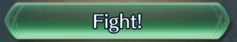

def tryWaitAndClick(p, w1=0.1, w2=0): try: print(p) m = wait(p, w1) wait(w2) click(m) return True except: pass def findClick(ps): for p in ps: tryWaitAndClick(p) def auto(): if tryWaitAndClick(, w2=4) \ and tryWaitAndClick(, w1=4) \ and tryWaitAndClick(, w1=4): for i in range(256): if tryWaitAndClick(): return True elif tryWaitAndClick(): return False commons = [ , , , , , , ] def main(): for i in range(64): findClick(commons) auto() if __name__ == '__main__': main()